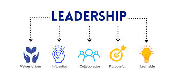
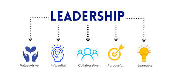

.jpg)
Welcome to my website! This is all about me, the different skills I have developed and the work that I have been a part of. This page specifically is about some of the things I am currently involved in while the other pages go into more detail about my professional and personal goals respectively.
My Personal Portfolio
I'm here to display my best skills and talents and make it easy to understand what I excel at. This is for those that need an introduction to who I am and know what makes me unique.
Currently I am a freshman attending school at BYU Idaho working on my Bachelor’s degree in computer science. I have always been passionate about technology and want to find a career in technology that allows me to build my skills.
I am also currently working for the Information Technology department at BYU Idaho. The job has helped me find what kind of a workplace I want and what kind of work I want to do. I really like working here because it not only Is building my technology skills, but also my people skills as I work with the faculty and students on campus.
One of my personal skills that I am building is my leadership skills. I have many different leadership opportunities right now at work and in my personal life. I am over a few different groups and have been learning how to make decisions with confidence while understanding others and their concerns. I have learned to take criticism and become better through failures and successes alike.
 
